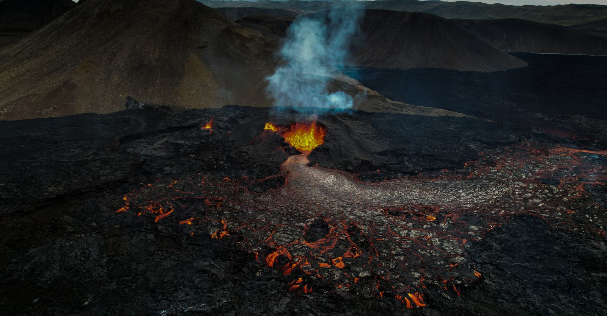

Physical volcanology · Monitoring · Hazard maps · Training
A volcano files its reports in cubic kilometres.
My work is reading those reports before they come due — for the geological surveys, observatories and civil-protection agencies who carry the responsibility. And saying plainly what the numbers do not say: an eruption's size is not its danger. Distance and exposure decide harm, and evacuation decisions belong to the authorities — never to this practice.

●Station line — nothing on this page is live. No volcano named here is being reported in real time. For live alerts, your national geological survey or volcano observatory is the only address.
The instrumentSheet 01 / 04
The VEI sheet: how big was it, in rock?
The Volcanic Explosivity Index is the standard way eruptions are sized: a logarithmic scale, set by the bulk volume of material thrown out, in cubic kilometres. It is the first sheet I open with a new client, because it cures the commonest misunderstanding in the room — that the numbers climb evenly. They do not. Work it yourself: the table below is the scale as published; the steppers underneath divide one level's lower bound by another's, in the open.
| VEI | Bulk volume (km³) | The scale's own word | A recorded example |
|---|---|---|---|
| 0 | < 0.00001 | Gentle — effusive | Kīlauea, Hawaiʻi — effusive episodes |
| 1 | 0.00001 – 0.001 | Gentle | Stromboli, Italy — routine activity |
| 2 | 0.001 – 0.01 | Explosive | Etna, Italy — paroxysmal episodes |
| 3 | 0.01 – 0.1 | Explosive | Soufrière Hills, Montserrat — 1995–2010 phases |
| 4 | 0.1 – 1 | Cataclysmic | Eyjafjallajökull, Iceland — 2010 |
| 5 | 1 – 10 | Cataclysmic | Mount St. Helens, USA — 1980 |
| 6 | 10 – 100 | Colossal | Pinatubo, Philippines — 1991 |
| 7 | 100 – 1,000 | Super-colossal | Tambora, Indonesia — 1815 |
| 8 | > 1,000 | Mega-colossal | Toba, Indonesia — about 74,000 years ago |
Scale after Newhall & Self (1982), as used by observatories worldwide. Note VEI 1: it spans two orders of magnitude (0.00001–0.001 km³), so its lower bound sits at 10⁻⁵ and VEI 2 begins at 10⁻³. The comparison below uses lower bounds throughout, and says so.
Work the scaleTwo steppers · one division
First eruption — level A
VEI 3
Second eruption — level B
VEI 6
Size is not danger. VEI measures how much rock came out — nothing about who was in the way. A VEI 2 on a tourist island can kill; a VEI 5 in an empty ocean trench zone may harm no one. Hazard is size times exposure, and exposure is a map of people, not of magma. That map is Engagement 01, over the page.
The registerSheet 01 / 04
Services, entered like log lines
Five kinds of work, taken in small numbers so each one is done properly. If what you need is not on this register, it is probably not mine to sell you — ask anyway, and I will point you at whoever it belongs to.
Eruption monitoring programmesNetwork design, station siting, telemetry, and the reading rota that turns raw traces into a duty officer's brief.
ClientGeological surveys
BasisMulti-year programme
Booking — next dry season
Hazard-map revisionDeposit mapping and flow modelling to redraw the zones a map promises to the people living inside them.
ClientCivil-protection agencies
BasisFixed-fee study
Two studies a year
Observatory trainingDuty-officer and field-team training: the signal triad, logging discipline, and how to write the stand-down report.
ClientVolcano observatories
BasisTraining block
By arrangement
Unrest assessmentAn independent reading of an unrest episode — what the signals support, what they don't, and the careful report when it ends quietly.
ClientSurveys & agencies
BasisRapid study
Year-round
Gas & deformation campaignsCampaign-style measurement seasons that fill the gaps a permanent network cannot justify.
ClientResearch institutes
BasisCampaign season
One season a year
FeesSheet 01 / 04
The price, printed before the conversation
- Lead volcanologist (Dr Voss)€1,150 / day
- Field scientist€780 / day
- Data analyst€620 / day
- Assessment report, fixed€2,400 / report
- Hazard-map studyfrom €18,500 fixed
- Training block — 3 days, up to 12 staff€9,600 fixed
What moves the price: first and by a distance, volcano access and safety logistics — boats, helicopters, exclusion-zone permits, insurance. They are billed at cost, itemised, and on a remote island they routinely cost more than the science. Season and weather windows come second; instrument shipping third. The day rates have not moved since 2023, and they are the rates the estimator on this page uses.
Cost a programmeSame rates · added in the open
Lead volcanologist
€1,150 / day
6
Field scientist
€780 / day
10
Data analyst
€620 / day
8
Assessment reports
€2,400 / report
1
Indicative total€0
Indicative only — excludes access, permits, insurance and safety logistics, which are quoted at cost after a scoping call. A written quote follows the same arithmetic, line by line.
From the engagementsSheet 01 / 04
The map that got smaller
A stratovolcano's hazard map, drawn in 1998, marked a broad northern sector as high-hazard for pyroclastic flows. Twenty-five years of deposits said otherwise: three field seasons of mapping found the flows had never crossed one ridge line, while a drainage the old map called moderate had carried lahars twice. The honest revision shrank one zone and grew another — and shrinking a hazard zone is the change a scientist should have to argue hardest for. The argument, the evidence and the outcome are written up in full as Engagement 01.
Testimonial — attached to Engagement 01, the hazard-map revision
“I asked for a map our mayors could defend in a public meeting. Mara gave us one where every line could be walked back to a deposit, a measurement or a dated photograph — including the line that moved her own earlier work. That is rarer than it should be.”
A volcano on your desk?
Bring the record you have — traces, maps, a restless mountain and a deadline. The first conversation is a reading, not a pitch.